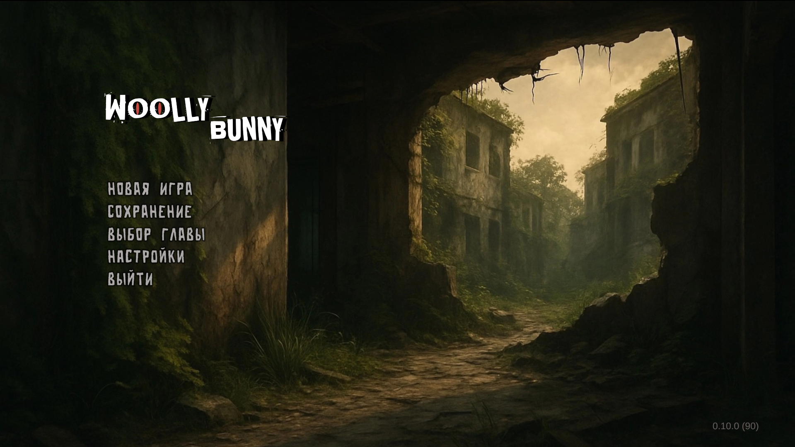
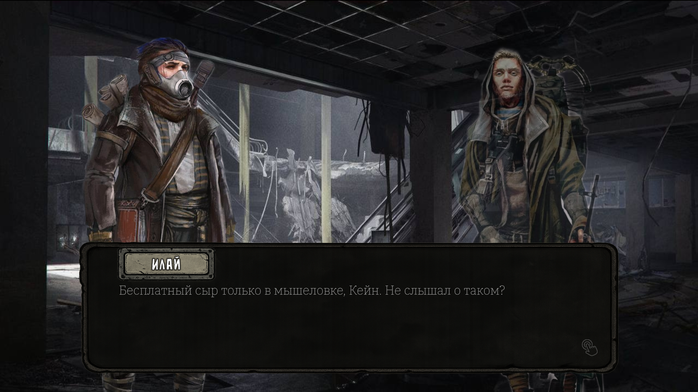
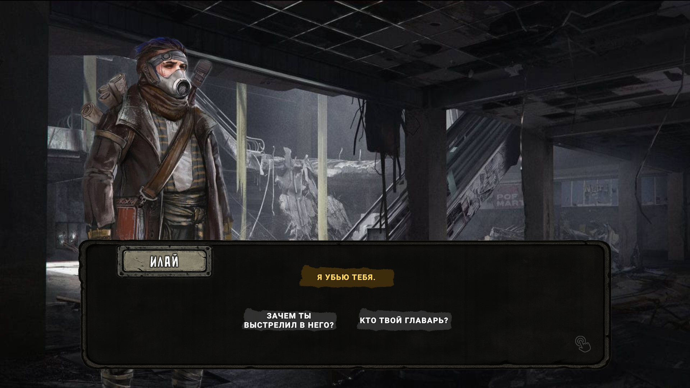
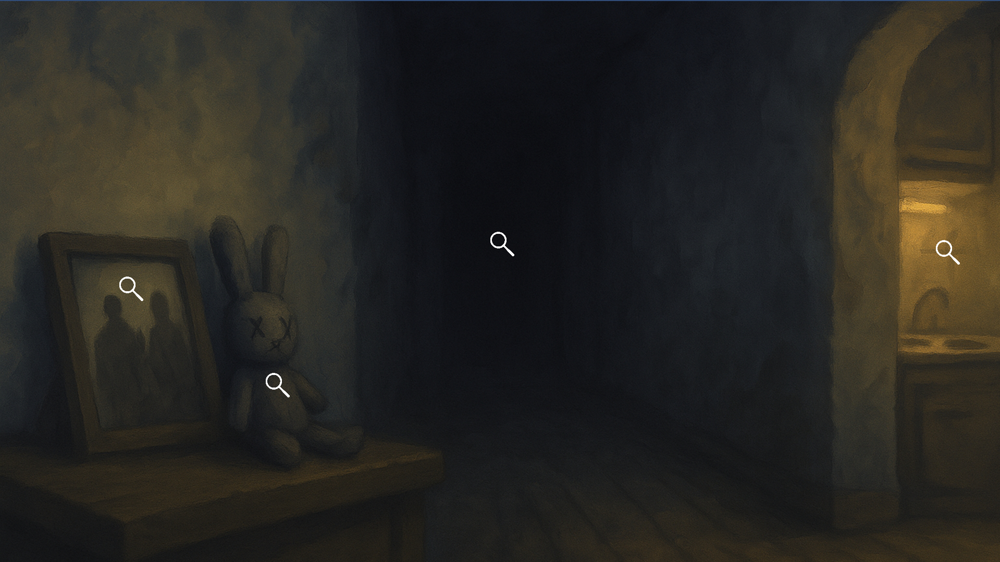
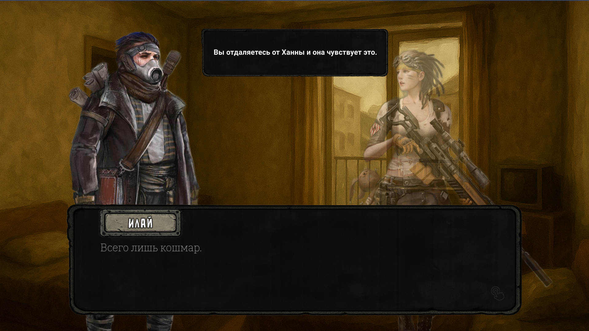
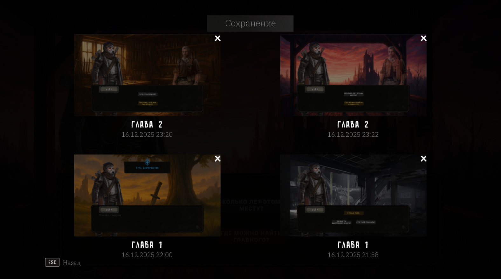

RECORD 1 OF 6
POST-APOCALYPTIC VISUAL NOVEL
"The global catastrophe holds secrets. It's time to reveal them."
Woolly Bunny is a 2D visual novel set in a post-apocalyptic world where humanity has collapsed due to internal conflicts. After the catastrophe, the survivors are divided into those who try to preserve their humanity and those who have lost it completely. Through the game characters and setting, you will see the consequences of this catastrophe and be able to reflect on the nature of human morality, hope, and survival.
The game is inspired by such gaming projects as “Dying Light”, “The Last of Us”, and others.
Classified
Data






>> CONNECTION ESTABLISHED
FILE: WoollyBunny_Demo0130135.zip
size: 826 MB
WoollyBunny.exeGame Designer / Developer / Writer
// NOTES:
Over 5 years of experience in game design. I develop games from scratch using Unity. You can send me feedback via Telegram.
Composer
// NOTES:
He is working on the musical accompaniment for the game, which you will be able to hear very soon.
Генерируется автоматически из английского названия, но вы можете изменить его вручную (только латиница, цифры и дефисы).